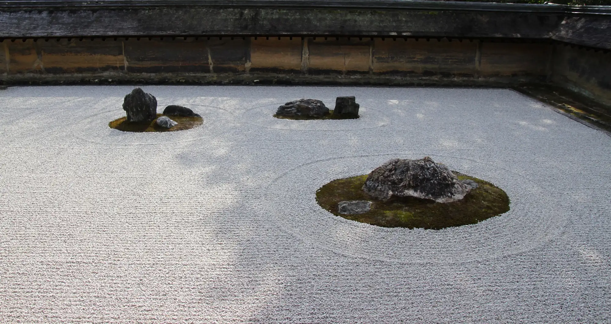

Cancer Evidence Explorer
Which exposures can cause which cancers, and how sure the evidence is for each link. From the IARC Monographs.
- Exposures
- 185
- Cancer types
- 68
- Links
- 469
Free tools built from the IARC Monographs and published reviews by Wenxin Wan, a cancer epidemiologist.
They describe whole populations, not what caused any one person’s illness.

Tobacco smoking and processed meat are both in Group 1: the evidence that each can cause cancer is equally sure. The risks are not.
European data. Quoted from the Cancer Evidence Explorer.
The area of each circle shows the number in 1,000.
Each 50 grams of processed meat eaten every day raises the risk of bowel cancer by 18%.
Two tools, free to use, each in 10 languages.
Which exposures can cause which cancers, and how sure the evidence is for each link. From the IARC Monographs.

Risk factors for heart disease, stroke, type 2 diabetes, dementia and more, graded by how strong the evidence is.
The official recommendations for lowering your own cancer risk, coordinated by IARC (WHO) and its partners.
Learning by playing: three games.